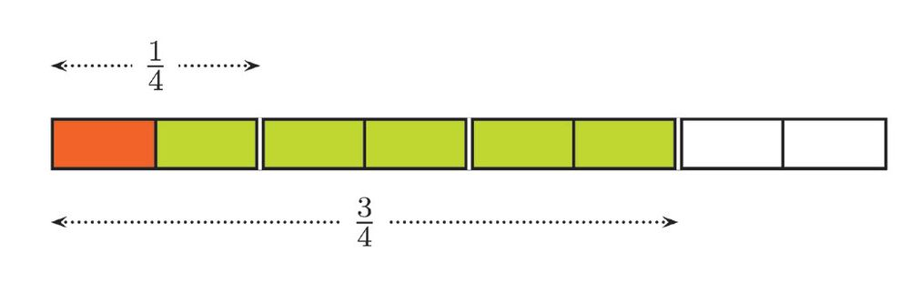
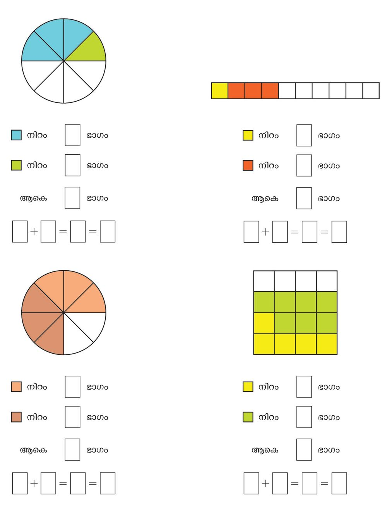
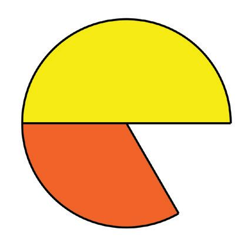
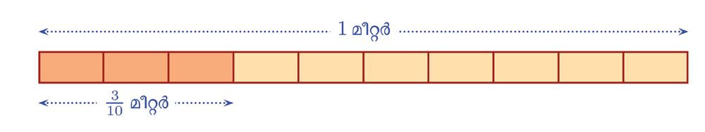
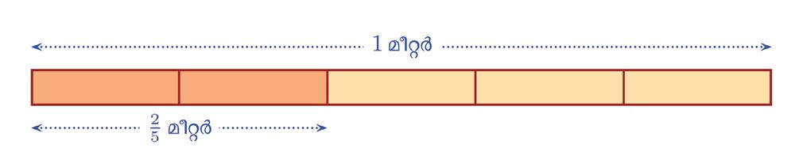

പരസ്യം കണ്ടല്ലോ.
ഈ കടയിലെ ചില സാധന-ങ്ങളുടെ നേരത്തെയുള്ള വിലയാണ് പട്ടികയിൽ കൊടുത്തിരിക്കുന്നത്.
ഓരോ സാധനത്തിന്റെയും ഇപ്പോഴത്തെ
വില കണക്കാക്കണം.
എങ്ങനെ?
ഓരോ 100 രൂപയ്ക്കും 10 രൂപയാണ് കുറവ്.
അപ്പോൾ വിലക്കുറവ് കണക്കാക്കാൻ ഓരോന്നി- എന്റയും വില- യ ഇൽ എത്ര 100 - ക ൾ
ഉണ്ടെന്ന് കണക്കാക്കി അതിനെ 10 കൊണ്ട്
ഗുണിച്ചാൽ മതിയ-ല്ലോ.
വമ്പിച്ച ആദായ--വിൽപ്പന
ഓരോ നൂറ് രൂപയ്ക്കും
10 രൂപ കിഴിവ്
ഉദാഹ-രണ-മായി, ഫാനിന്റെ വില- 1200 രൂപ.
അതായത്, 12 നൂറ്; അപ്പോൾ വിലക്കുറവ്
12 ണ്മ 10 = 120 രൂപ
രണ്ട് ക്രിയകളും ഒരുമിച്ച് ചെയ്യാം.
1200
100
ണ്മ 10 = 120
ഫാനിന്റെ ഇപ്പോഴത്തെ വില 1200 − 120 = 1080 രൂപ
ഇതുപോലെ മറ്റുള്ളവ-യുടെയും ഇപ്പോഴത്തെ വില കണക്കാക്കാമ-ല്ലോ.
135
135
നൂറിൽ എത്ര?
Page 48
Figure fig_ch04_p048_01 (Page 48)
ഗണിതം
പണമിട-പാട്
ഒരു സഹക-രണ ബാങ്കിൽനിന്നും കാർഷിക വായ്പ കൊടുക്കുന്നുണ്ട്.
ഒരു വർഷം കഴിയുമ്പോൾ തിരിച്ചട-ക്കണം. ഓരോ നൂറ് രൂപയ്ക്കും 12
രൂപ അധികം കൊടുക്കുകയും വേണം.
ചിലർ ഈ ബാങ്കിൽ നിന്ന് കടമെടുത്ത തുക നോക്കൂ.
സാബു
4000 രൂപ
സുമ
5500 രൂപ
രാജി
1550 രൂപ
ഗോകുൽ
3750 രൂപ
നബീൽ
3800 രൂപ
ഓരോരുത്തരും തിരിച്ചട-യ്ക്കേണ്ട തുക എത്രയാണെന്ന് കണക്കാക്കുക.
എത്ര കൂടുതൽ കൊടുക്കണ-മെന്നറിയാൻ ഓരോ തുകയിലും എത്ര നൂറുകൾ ഉണ്ടെന്ന് കണക്കാക്കി, അതിനെ 12 കൊണ്ട് ഗുണിച്ചാൽ മതിയല്ലോ.
മുമ്പു ചെയ്തതു പോലെ, 100 കൊണ്ടു ഹരിച്ച് 12 കൊണ്ടു ഗുണിച്ചാൽ
മതി.
ഉദാഹ-രണ-മായി, രാജി വാങ്ങിയത് 1550 രൂപയാണ്
കൂടുതൽ കൊടുക്കേണ്ടതു കണക്കാക്കാൻ 1550 നെ 100 കൊണ്ട് ഹരിച്ച്
12 കൊണ്ട് ഗുണിക്കണം.
1550
100
ണ്മ 12 = 186
അതായത് രാജി തിരിച്ചട-ക്കേണ്ട തുക 1550 + 186 = 1736 രൂപ
ഇതുപോലെ മറ്റുള്ളവർ തിരിച്ചട-ക്കേണ്ട തുകയും കണക്കാക്കുക.
ശതമാനം
ആദ്യത്തെ കണക്കിൽ ഓരോ നൂറ് രൂപയ്ക്കും 10 രൂപയാണ് വിലക്കുറവ്
ഇതിനെ 10 ശതമാനം കിഴിവ് എന്നാണ് പറയുന്നത്.
10 ശതമാനം എന്നത് 10% എന്നാണ് എഴുതുശതം എന്നാൽ 100.
ന്നത്.
മാനം എന്നാൽ അളവ്.
അപ്പോൾ 100 നെ അടിസ്ഥാന- വായ്പയുടെ കണക്കിൽ ഓരോ നൂറ് രൂപയ്ക്കും
മാക്കിയുള്ള അളവാണ്
12 രൂപ- കൂടുതൽ കൊടുക്കണം. അതായ-ത്, 12%
ശതമാനം.
(12 ശതമാനം) കൂടുതൽ കൊടുക്കണം.
ഭാഗം - 2
136
Page 49
Figure fig_ch04_p049_01 (Page 49)
ക്ലാസ് - 6
സംഭാവ-നക്കണക്ക്
ജോസഫ് ഓരോ മാസവും വരുമാന-ത്തിന്റെ 8% ചികിത്സാസഹായനിധിയിലേക്ക് സംഭാവ-നയായി കൊടുക്കുന്നുണ്ട്. ജോസഫിന്റെ ജനുവരി
മാസത്തെ വരുമാനം 12000 രൂപയാണ്. അയാൾ ആ മാസം എത്ര രൂപ
കൊടുക്കും?
8 ശതമാന-മെന്നാൽ ഓരോ 100 നും 8 എന്നാണല്ലോ അർഥം. അപ്പോൾ
12000 ൽ എത്ര നൂറ്ക-ളുണ്ടെന്ന് കണക്കാക്കി അതിനെ 8 കൊണ്ട് ഗുണി-
ക്കുക-യാണ് വേണ്ടത്.
12000
100
ണ്മ 8 = 120 ണ്മ 8 = 960
അപ്പോൾ ജോസഫ് ജനുവ-രിയിൽ 960 രൂപയാണ് കൊടുത്തത്.
8
ഇതു തന്നെ 12000 ണ്മ 100 എന്നും കണക്കാക്കാമ-ല്ലോ. അതായത് 12000
8
ന്റെ 100 ഭാഗം
ജോസഫിന്റെ കൂട്ടുകാരൻ അലി വരുമാന-ത്തിന്റെ 12% ആണ് സംഭ-ാ
വന കൊടുക്കുന്നത്. അലിയുടെ ജനുവ-രിയിലെ വരുമാനം 15000 രൂപയായിരുന്നു. അയാൾ എത്ര രൂപ കൊടുക്കും?
12% എന്നതിനെ ഓരോ 100 നും 12 എന്നെടുത്ത്
15000
100
ണ്മ 12
എന്ന് കണക്കാക്കാം.
12
അല്ലെങ്കിൽ 100 ഭാഗം എന്നെടുത്ത്
12
15000 ണ്മ 100
എന്ന് കണക്കാക്കാം. ചെയ്തു നോക്കൂ.
137
നൂറിൽ എത്ര?
Page 50
Figure fig_ch04_p050_01 (Page 50)

Figure fig_ch04_p050_02 (Page 50)

Figure fig_ch04_p050_03 (Page 50)
ഗണിതം
1. പരസ്യം നോക്കൂ.
എല്ലാത്രവാസ്
ങ്ങൾക്കും
വില30ക്കുറവ്
%
ഷീല ഈ കടയിൽ നിന്നും 1800 രൂപയുടെ വസ്ത്രങ്ങൾ വാങ്ങി.
എത്ര രൂപ കൊടുക്കണം?
2. ജോണി അയാളുടെ വരുമാന-ത്തിന്റെ 15% എല്ലാ മാസവും മിച്ചം
വയ്ക്കുന്നു. ജോണിയുടെ ജനുവരി മാസത്തെ വരുമാനം 32000
രൂപയാണ്. ആ മാസം എത്ര രൂപ മിച്ചം വയ്ക്കും?
3. ടെലിവിഷൻ നിർമിക്കുന്ന ഒരു കമ്പനി അടുത്ത മാസം മുതൽ
5% വില കൂട്ടാൻ തീരുമാനിച്ചു. ഇപ്പോൾ, 26000 രൂപ വിലയുള്ള
ടെലിവിഷന് അടുത്തമാസം എന്തു വിലയാകും?
4. കാർ നിർമിക്കുന്ന ഒരു കമ്പനി, അടുത്ത- മാസം മുതൽ 2% വില
കുറയ്ക്കാൻ തീരുമാനിച്ചു. ഇപ്പോൾ 250000 രൂപ വിലയുള്ള
കാറിന് അടുത്ത -മാസം എന്തു വിലയാകും?
5. ഒരു കമ്പനി ഒരു മാസത്തെ ശമ്പള-ത്തിന്റെ 8% ഉത്സവ-ബത്തയായി നൽകുന്നു. 12875 രൂപ ശമ്പള-മുള്ള ഒരാൾക്ക് എത്ര രൂപ
ഉത്സവ-ബത്ത- കിട്ടും?
മറ്റൊരു ശതമാനം
ഒരു സ്കൂളിൽ 240 കുട്ടിക-ളാണ് ഒരു പരീക്ഷ എഴുതിയ-ത്. 40% പേർക്ക്
എല്ലാ വിഷയ-ങ്ങൾക്കും അ ഗ്രേഡ് ലഭിച്ചു.
എന്താണ് ഇതിന്റെ അർഥം?
ഓരോ 100 കുട്ടിക-ളിലും 40 പേർക്ക് അ ഗ്രേഡ് കിട്ടി എന്ന് പറയുന്നതിൽ അർഥമില്ലല്ലോ.
ഭാഗം - 2
ആകെയുള്ള പേരുടെ ൽ ഭാഗത്തിന് അ ഗ്രേഡ് കിട്ടി
എന്നാണർഥം.
ന്റെ
എത്രയാണ്?
അതായത് അ ഗ്രേഡ് കിട്ടിയ-വർ
ന്റെ
ആയാലോ?
240
100
40
60
20
240 ണ്മ
40
100
20%
60%
30 ന്റെ 40% വും
40 ന്റെ 30% വും തുല്യ-
= 96
മാണോ?
മറ്റൊരു കണക്ക് നോക്കാം:
ഒരു ക്ലാസിൽ കുട്ടിക-ളുണ്ട്. അവരിൽ % പേർ ആൺകുട്ടിക-ളാണ്.
എത്ര ആൺകുട്ടികളുണ്ട്?
% ആൺകുട്ടികൾ എന്നതിന്റെ അർഥം, ആകെ കുട്ടിക-ളിൽ
ഭാഗം
ആൺകുട്ടികൾ എന്നാണ്.
അതായത് ആകെ കുട്ടിക-ളുടെ ഭാഗം; അതായത് പകുതി.
കുട്ടിക-ളുടെ പകുതി കുട്ടികൾ
ക്ലാസിൽ ആൺകുട്ടിക-ളുണ്ട്.
40
50
50
50
100
1
2
40
20
20
തെരഞ്ഞെടുപ്പ്
ഒരു പഞ്ചായത്തിലെ ഒരു വാർഡിൽ
നടന്ന -തെരഞ്ഞെടുപ്പിൽ 80% പേർ
വോട്ടു ചെയ്തു. വാർഡിൽ 1200
വോട്ടർമാരുണ്ട്. എത്ര ആളുകൾ
വോട്ട് ചെയ്തു?
80
ഭാഗമാആകെ വോട്ടർമാരുടെ
100
ണല്ലോ വോട്ടു ചെയ്തത്.
അപ്പോൾ വോട്ടുചെയ് ത - വ - ര ഉടെ
80
ഗണിതം
1. ഒരു കമ്പനിയിലെ തൊഴിലാളിക-ളിൽ 46% പേർ സ്ത്രീകളാണ്.
അവിടെ ആകെ 300 തൊഴിലാളികളാണുള്ളത്. ഇതിൽ സ്ത്രീകൾ
എത്രപേരാണ്?
2. ഒരു ക്ലാസിലെ കുട്ടിക-ളുടെ 20% പേർ ഗണിത ക്ലബിൽ അംഗങ്ങളാണ്. ക്ലാസിൽ ആകെ 35 കുട്ടികളുണ്ട്. ഗണിതക്ലബിൽ ആ
ക്ലാസിൽ നിന്നും എത്ര പേരുണ്ട്?
3. ഒരു തെരഞ്ഞെടുപ്പിൽ ജയിച്ചയാൾക്ക് ആകെ രേഖപ്പെടുത്തിയ
വോട്ടിന്റെ 54% കിട്ടി. അവിടെ 1450 വോട്ടുക-ളാണ് രേഖപ്പെടുത്തിയ-ത്. ജയിച്ച സ്ഥാനാർഥിക്ക് എത്ര വോട്ടു കിട്ടി?
4. ഒരു കാറിന്റെ ഇപ്പോ--ഴത്തെ വില 530000 രൂപയാണ്. അടുത്തമാസം കാറിന്റെ വില 2% കുറയ്ക്കാൻ കമ്പനി തീരുമാനിച്ചു.
എത്ര രൂപ കുറയും? കാറിന്റെ പുതിയ വില എന്തായിരിക്കും?
5. ന്യൂമാറ്റ്സ് പരീക്ഷയിൽ പങ്കെടുത്തത് 1300 കുട്ടിക-ളാണ്. അവരിൽ 65% പേർക്ക് 25 ൽ കൂടുതൽ മാർക്ക് കിട്ടി. എത്ര പേർക്കാണ്
25 ൽ കൂടുതൽ കിട്ടിയത്?
മറുശതമാനം
ഒരു കമ്പനിയിൽ ജോലി ചെയ്യുന്നവ-രിൽ 60% പേർ സ്ത്രീകളാണ്.
ഇങ്ങനെ പറയുന്നതിൽ നിന്നും എന്തെല്ലാം കാര്യങ്ങൾ മനസ്സിലാക്കാം?
ആകെ ജോലിക്കാരുടെ
60
100
ഭാഗം സ്ത്രീകളാണ്.
40
അപ്പോൾ ജോലിക്കാരുടെ എത്ര ഭാഗമാണ് പുരുഷ-ന്മാർ? 100
അതായത് 40% പുരുഷ-ന്മാർ.
മറ്റൊരു രീതിയിൽ പറഞ്ഞാൽ, ആകെ ജോലിക്കാരുടെ
3
5
ഭാഗം
2
സ്ത്രീകളും, 5 ഭാഗം പുരുഷ-ന്മാരും. (അതെങ്ങനെ?)
സബ്ജില്ലാതല സ്കൗട്ട്, ഗൈഡ് ക്യാമ്പിൽ 320 കുട്ടികൾ ഉണ്ടായിരുന്നു.
ഇതിൽ 55% ഗൈഡുകളും ബാക്കി സ്കൗ-ട്ടുകളും ആയിരുന്നു. ക്യാമ്പിൽ
എത്ര സ്കൗട്ടുകൾ ഉണ്ടായിരുന്നു?
സ്കൗ-ട്ടുകൾ-, ആകെയുണ്ടായിരുന്നവരുടെ 100 − 55 = 45 ശതമാനം
45
അപ്പോൾ സ്കൗട്ടുക-ളുടെ എണ്ണം 320 ണ്മ 100
ഇതു കണക്കാക്കാൻ വിഷമ-മില്ലല്ലോ.
ഭാഗം - 2
140
Page 53
Figure fig_ch04_p053_01 (Page 53)

Figure fig_ch04_p053_02 (Page 53)

Figure fig_ch04_p053_03 (Page 53)
ക്ലാസ് - 6
1.
2.
3.
ഒരു സ്കൂളിലെ 420 കുട്ടിക-ളിൽ 5% പേർ ഒരു ദിവസം ഹാജരായില്ല. അന്ന് എത്ര പേർ ഹാജരായി?
സാബുവിന്റെ പൂന്തോട്ടത്തിലെ 280 ചെടിക-ളിൽ 70% ചെടികളും
പൂക്കുന്നവ-യാണ്. എത്ര ചെടികളാണ് പൂക്കാത്തത്?
ഒരു വണ്ടിത്താവ-ളത്തിൽ ആകെ 480 വാഹന-ങ്ങളുണ്ട്. ഇതിൽ 45%
മോട്ടോർ സൈക്കിളുകളും 40% കാറുക-ളുമാണ്. ബാക്കിയുള്ളവ മിനി
ബസ്സുക-ളും. എത്ര മിനിബ-സ്സുകളാണ് ഇവിടെയുള്ളത്
ആകെ എത്ര?
ഒരു പുരയിട-ത്തിലെ 50% മരങ്ങളും തെങ്ങുക-ളാണ്. ഇവിടെ 32 തെങ്ങുകളാണുള്ളത്. ആകെ എത്ര മരങ്ങളുണ്ട്?
50% തെങ്ങുകൾ എന്നാൽ ആകെ മരങ്ങളുടെ
കൾ.
50
100
=
1
2
ഭാഗം തെങ്ങു-
അപ്പോൾ ആകെ മരങ്ങൾ, തെങ്ങുക-ളുടെ 2 മടങ്ങാണ്.
അതായ-ത്, ആകെ മരങ്ങളുടെ എണ്ണം 32 ണ്മ 2 = 64
സബ്ജില്ലാതല ഗണിതശാസ്ത്ര -മേള-യിൽ പങ്കെടുത്ത ഒരു പരീക്ഷാഹാളിൽ 99
കുട്ടിക-ളിൽ 60% പേരും പെൺകുട്ടിക-ളായിരുന്നു. 108 കുട്ടികളും ഒരു അധ്യാപ-കപെൺകുട്ടിക-ളാണ് മേളയിൽ പങ്കെടുത്തത്. മേളയിൽ നുമുണ്ട്? പരീക്ഷ കഴിഞ്ഞ്
ഓരോ കുട്ടിക-ളായി പുറആകെ എത്ര കുട്ടികൾ പങ്കെടുത്തു?
ത്തേക്ക് പോകാൻ തുടങ്ങി.
60
3
ആകെ കുട്ടിക-ളുടെ 100 = 5 ഭാഗമാണ് പെൺകുട്ടി- ഇപ്പോൾ ഹാളിലുള്ള കുട്ടികൾ.
3
അതായത് ആകെ കുട്ടിക-ളുടെ 5 ഭാഗം 108 ആണ്.
141
ക- ള ഉടെ എണ്ണം 98%
ആയാൽ എത്ര കുട്ടിക-ളാണ്
പുറത്തേക്ക് പോയത്?
നൂറിൽ എത്ര?
Page 54
Figure fig_ch04_p054_01 (Page 54)

Figure fig_ch04_p054_02 (Page 54)
ഗണിതം
അപ്പോൾ ആകെ കുട്ടിക-ളുടെ എണ്ണം, 108 ന്റെ മടങ്ങ്.
അതായ-ത്, 108 ണ്മ = 180
മേളയിൽ 180 കുട്ടികളാണ് പങ്കെടുത്തത്
5
3
5
3
ഒരു ക്ലാസിലെ 26 പേർക്ക് ഒരു പരീക്ഷയിൽ എ ഗ്രേഡ് ലഭിച്ചു.
ഇത് ക്ലാസിൽ ആകെയുള്ളവ-രുടെ 65% ആണ്. ക്ലാസിൽ ആകെ
എത്രപേരുണ്ട്?
2. ജയൻ ഒരു മാസം ഭക്ഷണ-ത്തിനായി 8400 രൂപ ചെലവാക്കി.
ഇത് വരുമാന-ത്തിന്റെ 35% ആണ്. ജയന്റെ ആ മാസത്തെ വരുമാനം എത്രയാണ്?
3. ഒരു സ്കൂളിലെ അധ്യാപ-കരിൽ 32 പേർ പുരുഷ-ന്മാരാണ്. ഇത്
ആകെയുള്ള അധ്യാപ-കരുടെ 40% ആണ്. ആകെ എത്ര അധ്യാപക-രുണ്ട്?
1.
ശതമാന-ത്തിന്റെ ശതമാനം
ഒരാൾ തന്റെ ആകെ വരുമാന-ത്തിന്റെ
20% വിദ്യാഭ്യാസ-ത്ത-ിനായി ചെലവ-ഴിക്കുന്നു. ഈ തുകയുടെ 25% പുസ്തക-ങ്ങൾ
വാങ്ങുന്നതിനാണ് ഉപയോഗിക്കുന്നത്.
ആകെ വരുമാന-ത്തിന്റെ എത്ര ശതമാനമാണ് പുസ്തകങ്ങൾക്കായി ചെലവാക്കുന്നത്?
മാറുന്ന ശതമാനം
വിലക്കിഴിവ് നൽകുന്ന ഒരു കടയിൽ നിന്ന്
രവി 400 രൂപ- വിലയുള്ള ഒരു ഷർട്ട് വാങ്ങി. എത്ര
രൂപ കൊടുക്കണം?
400 ന്റെ
ഭാഗം കുറച്ച് നൽകിയാൽ മതിയ-ല്ലോ.
20%
20
100
400 ണ്മ
20
100
= 80
അപ്പോൾ കൊടുക്കേണ്ടത്
400 − 80 = 320 രൂപ.
മറ്റൊരു രീതിയിലും ഇത് കണക്കാക്കാം.
25
ന്റെ 100 ഭാഗമെന്നാൽ
400 ന്റെ 20% ശതമാന-മാണ് വിലക്കുറ-വ്.
25
25
ണ്മ 100 =
ണ്മ 100 =
അപ്പോൾ 400 ന്റെ 80% കൊടുത്താൽ മതി.
അതാ- യ ത് 5 ആണ് പുസ് ത കം
400 ന്റെ 80% = 400 ണ്മ
= 320 രൂപ.
വാങ്ങാൻ ചെലവാക്കുന്നത്.
25
20
ഭാഗത്തിന്റെ 100
വരുമാന-ത്തിന്റെ 100
ഭാഗമാണ് പുസ്തക-ത്തിന് ചെലവാക്കുന്നത്.
20
100
20
100
%
1
5
5
100
80
100
അപ്പോൾ ഒരു സംഖ്യയുടെ 30% ത്തിന്റെ
40% ആ സംഖ്യയുടെ എത്ര ശതമാനമാണ്?
ഇനി മറ്റൊരു കണക്ക് നോക്കൂ.
ഒരു സ്കൂളിൽ കഴിഞ്ഞ- വർഷം 800 കുട്ടികൾ
ഉണ്ടായിരുന്നു. ഈ വർഷം കുട്ടിക-ളുടെ എണ്ണം
12% കൂടി. ഇപ്പോൾ എത്ര കുട്ടികൾ ഉണ്ട്?
കൂടിയത്, 800 ണ്മ = 96
ഇനി ഇപ്പോൾ ഉള്ള കുട്ടിക-ളുടെ എണ്ണം കണക്കാക്കാമ-ല്ലോ.
പരപ്പളവ്
ഒരു ചതു- ര - ത്ത ഇന്റെ നീളവും
വീതിയും
വീതം കൂടിയാൽ
ഇത് മറ്റൊരു രീതിയിലും ചെയ്യാം.
പരപ്പളവ് എത്ര ശതമാനം കൂടും?
12
100
മടങ്ങ് എന്നതിനെ 112 ശതമാനം (112%) എന്നും പറയാം.
1. ഒരു കമ്പനിയുടെÿസൈക്കിളിന് കഴിഞ്ഞ മാസം 3400 രൂപയായിരുന്നു വില. ഈ മാസം വില 15% കുറഞ്ഞു. പുതിയ വിലഎന്താണ്?
2. ഒരു വാച്ചിന്റെ -വില 3680 രൂപയാണ്. ഇത് 20% വില കുറച്ച്
വിൽക്കുന്നു. ഇതു വാങ്ങാൻ എത്ര രൂപ കൊടുക്കണം?
3. ഈ വർഷം പെയ്ത മഴ കഴിഞ്ഞ വർഷത്തേക്കാൾ 20% കൂടി
എന്നാണ് കണക്കാക്കിയിരിക്കുന്നത്. കഴിഞ്ഞ വർഷം 230 സെന്റിമീറ്റർ മഴയാണ് പെയ്തത്. ഈ വർഷം എത്ര സെന്റിമീറ്റർ മഴ
പെയ്തു?
4. കഴിഞ്ഞ വർഷം ഒരാളുടെ മാസവരുമാനം 12000 രൂപയായിരുന്നു. ഈ വർഷം വരുമാനം 6% കൂടി ഇപ്പോൾ അയാളുടെ മാസവരുമാനം എത്ര രൂപയാണ്?
ഭിന്നശ-തമാനം
25% എന്നാൽ
1
25
ഭാഗമാണെന്ന് പറഞ്ഞല്ലോ; അതായത്
ഭാഗം.
4
100
125% എന്ന് പറഞ്ഞാലോ?
125
1
മടങ്ങ്; അതായത് 1
മടങ്ങ്.
4
100
അപ്പോൾ ശതമാനം എന്നത് മടങ്ങോ ഭാഗമോ ആണ്.
ഇതനുസ-രിച്ച്, 100 ന്റെ 12 2 മടങ്ങിനെ 12 2 % എന്നും പറയാം.
ഇത് എത്ര ഭാഗമാണ്?
1
1
1
1
25
ണ്മ 12 2 = 100 ണ്മ
= 8
100
2
1
1
അപ്പോൾ 12 2 % എന്നാൽ 8 ഭാഗം എന്നാണർഥം
1
12 % എന്നതിനെ 12.5% എന്നും എഴുതാം
2
1
അപ്പോൾ 33 3 % എന്ന് പറഞ്ഞാലോ?
1
1
ഭാഗത്തിന്റെ 33 3 മടങ്ങ്
100
1
1
1
100
1
ണ്മ 33 3 = 100 ണ്മ 3 = 3
100
അപ്പോൾ
1
1
33 3 % = 3 ഭാഗം
1. ചുവടെയുള്ള ഓരോ ശതമാന-ത്തെയും ഭാഗമായി വിശദീക-രി-
ക്കുക.
ശ)
1
64%
1
്) 62 2 %
ഭാഗം - 2
2
ശശ)
63%
്ശ)
66 3 %
2
144
1
ശശശ)
83%
്ശശ)
83 3 %
1
ശ്)
2
16 3 %
Page 57
Figure fig_ch04_p057_01 (Page 57)
ക്ലാസ് - 6
ഭിന്നവും ശതമാനവും
ഏതു ശതമാന-ത്തെയും ഭിന്നരൂപത്തിലാക്കാമെന്ന് കണ്ടല്ലോ. മറിച്ച് ഏതു
ഭിന്നസംഖ്യയെയും ശതമാന-രൂപ-ത്തിലെഴുതാൻ കഴിയുമോ?
അതിന് ശതമാനത്തെ മറ്റൊരു രീതിയിൽ കാണണം.
ഉദാഹ-രണ-മായി
1
10% എന്നാൽ 100 ഭാഗത്തിന്റെ 10 മടങ്ങ്
ഇത് മറ്റൊരു വിധത്തിലും പറയാം
1
10% എന്നാൽ 10 മടങ്ങിന്റെ 100 ഭാഗം.
ഇതുപോലെ
1
20% എന്നാൽ 20 മടങ്ങിന്റെ 100 ഭാഗം.
1
25% എന്നാൽ 25 മടങ്ങിന്റെ 100 ഭാഗം.
12
1
1
1
% എന്നാൽ 12 മടങ്ങിന്റെ 100 ഭാഗം.
2
2
എന്നെല്ലാം പറയാം.
1
അതായ-ത്, ശതമാന-മായി പറയുന്ന സംഖ്യയുടെ 100 ഭാഗമാണ്, ഈ
ശതമാന-ത്തിനെ ഭാഗമോ മടങ്ങോ ആയി പറയുന്ന ഭിന്നസംഖ്യ.
അപ്പോൾ ഭിന്നസംഖ്യയുടെ 100 മടങ്ങാണല്ലോ ശതമാന-സംഖ്യ.
2
ഉദാഹ-രണ-മായി 5 ഭാഗം എന്നത്, എത്ര ശതമാന-മാണെന്ന് കണ്ടുപിടിക്കാം.
1
ഇനി ഈ കണക്കു നോക്കൂ
ഒരു സ്കൂളിൽ 120 കുട്ടികൾ എസ്.-എസ്.-എൽ.സി പരീക്ഷ
എഴുതി. 110 കുട്ടികൾ തുടർന്ന് പഠിക്കാൻ യോഗ്യത നേടി.
പരീക്ഷ എഴുതിയ-വരുടെ എത്ര ഭാഗമാണ് യോഗ്യത നേടിയത്?
110
11
=
120
25
1
അതായ-ത്, യോഗ്യത നേടിയ കുട്ടിക-ളുടെ ശതമാന-ത്തിന്റെ 100 ഭാഗമാണ് ഈ ഭിന്നസംഖ്യ. അപ്പോൾ യോഗ്യത നേടിയ കുട്ടിക-ളുടെ ശതമാനം, ഇതിന്റെ 100 മടങ്ങാണ്, അതായത്
11
2
ണ്മ 100 = 91 3
25
2
അതായ-ത്, ഈ സ്കൂളിലെ 91 3 % കുട്ടികൾ തുടർപഠ-നത്തിന് യോഗ്യത
നേടി.
1. 750 കുട്ടിക-ളുള്ള ഒരു സ്കൂളിൽ 450 പെൺകുട്ടിക-ളുണ്ട്. ആകെ
കുട്ടിക-ളുടെ എത്ര ശതമാന-മാണ് പെൺകുട്ടികൾ?
2. റാഫിയുടെ ഒരു മാസത്തെ വരുമാനം 20000 രൂപയാണ്. ഇതിൽ
6400 രൂപ ഭക്ഷണ-ത്തിനായാണ് ചെലവ-ഴിക്കുന്നത്. ഇത് വരു-
മാന-ത്തിന്റെ എത്ര ശതമാന-മാണ്?
3. ജമീല-യുടെ ശമ്പളം കഴിഞ്ഞ മാസം 20000 രൂപയായിരുന്നു.
ഈ മാസം അത് 21000 രൂപയായി. ശമ്പളം എത്ര ശതമാനം
കൂടി?
4. 600 ഗ്രാം പഞ്ചസാര-യിൽ, 500 ഗ്രാം ഉപയോഗിച്ചു കഴിഞ്ഞു.
എത്ര ശതമാനം മിച്ചമുണ്ട്?
5. ഒരു സമച-തുര-ത്തിന്റെ വശങ്ങളുടെ നീളം 10% കൂട്ടി വലിയ
സമച-തുര-മാക്കി. പരപ്പളവ് എത്ര ശതമാനം കൂടി?
6. വിജയന്റെ ശമ്പള-ത്തിന്റെ 25% കൂടുത-ലാണ് അജയന്റെ ശമ്പളം.
അജയന്റെ ശമ്പള-ത്തിന്റെ എത്ര ശതമാനം കുറവാണ് വിജയന്റെ
ശമ്പളം?
ക്ലാസ് - 6
1. ചുവടെയുള്ള ഭിന്നസംഖ്യകൾ സൂചിപ്പിക്കുന്ന ഭാഗങ്ങളെ ശത-
മാന-മായി എഴുതുക.
ശ)
3
8
ശശ)
7
20
ശ്)
28
25
്)
23
ശശശ)
2
3
1
2. 60 ന്റെ 40% വും 40 ന്റെ 60% വും തമ്മിലുള്ള വ്യത്യാസം
എന്താണ്?
3. ഒരു സ്കൂളിലെ കുട്ടിക-ളിൽ 30% പെൺകുട്ടികളാണ്. ആകെ
വിദ്യാർഥികൾ ഉണ്ടെങ്കിൽ ആൺകുട്ടികൾ എത്രയാണ്?
4. 20 ന്റെ 40% ത്തോട് 50 ന്റെ 30% കൂട്ടിയാൽ ഏത് സംഖ്യയുടെ
50% കിട്ടും?
5. ഒരു സംഖ്യയുടെ 23 ശതമാനം 69. സംഖ്യ എന്താണ്?
6. ഒരു സംഖ്യയുടെ 10 ശതമാനം, 1 5. സംഖ്യ എന്താണ്?
7. ഒരു സാധന-ത്തിന്റെ വില കഴിഞ്ഞ മാസം 1800 രൂപയായിരുന്നു. ഈ മാസം വില 10% കുറഞ്ഞു. ഇതിന്റെ 10% അടുത്തമാസം കൂട്ടുമെന്നാണ് കടക്കാരൻ പറഞ്ഞത്. അടുത്തമാസം വില
എത്രയാകും?
8. കണ്ണന്റെ കൈയിൽ 600 രൂപയുണ്ട്. അതിന്റെ 50% തോമസ്സിനു
കൊടുത്തു. തോമസ്സിനു കിട്ടിയ-തിന്റെ 33 31 % ഹംസക്ക് കൊടുത്തു. എത്ര രൂപയാണ് ഹംസക്ക് കിട്ടിയ-ത്?
9. ഒരു സ്കൂളിലെ 7-ാം ക്ലാസിലെ വിദ്യാർഥികളെല്ലാം കണക്ക്
പരീക്ഷ- -യിൽ വിജയിച്ചു. ഗ്രേഡ് സംബന്ധിച്ച ചില വിവര-ങ്ങൾ
പട്ടിക-യായി നൽകിയിരിക്കുന്നു.
1240
എനിക്ക് ടീച്ചറുടെ
ഇനിയും
കഴിയും സഹായ-ത്തോടെ മെച്ചപ്പെടേ
കഴിയും
-ണ്ടതുണ്ട്
പഠന-നേട്ടങ്ങൾ
$ ശതമാനത്തെ നിരക്കായും ഒരു സംഖ്യയുടെ
ഭാഗമായും വിശദീക-രിക്കുന്നു.
$ ഒരു സംഖ്യയുടെ നിശ്ചിത ശതമാനം കണക്കാക്കുന്നു.
$ ഒരു സംഖ്യയുടെ നിശ്ചിത ശതമാനം അറിഞ്ഞാൽ സംഖ്യ കണക്കാക്കുന്ന രീതി വിശദീകരിക്കുന്നു.
$ ശതമാനം ഉപയോഗിച്ച് പ്രായോഗിക-പ്രശ്നങ്ങൾ
പരിഹ-രിക്കുന്നു.
$ ഒരു സംഖ്യയുടെ നിശ്ചിത ശതമാനത്തെ ആ
സംഖ്യയുടെ ഭാഗമായും, ഒരു സംഖ്യയുടെ
നിശ്ചിത ഭാഗത്തെ സംഖ്യയുടെ ശതമാന-മായും
മാറ്റി എഴുതുന്നു.